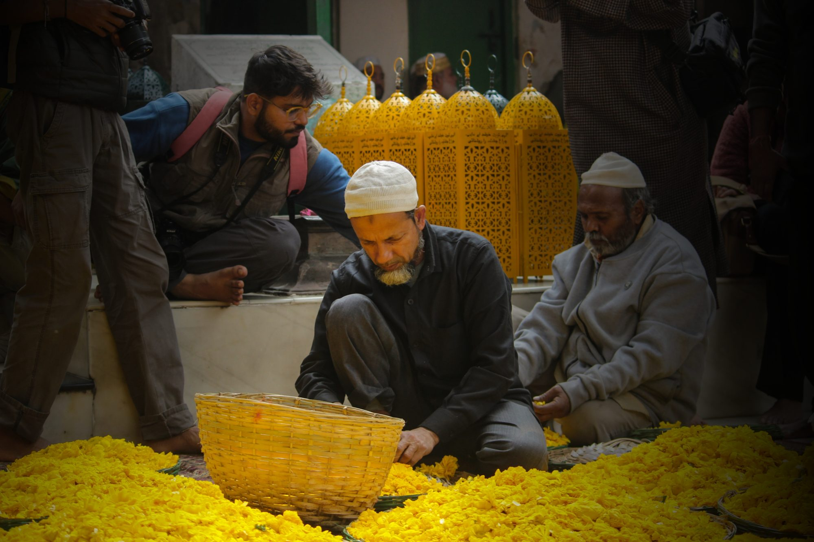
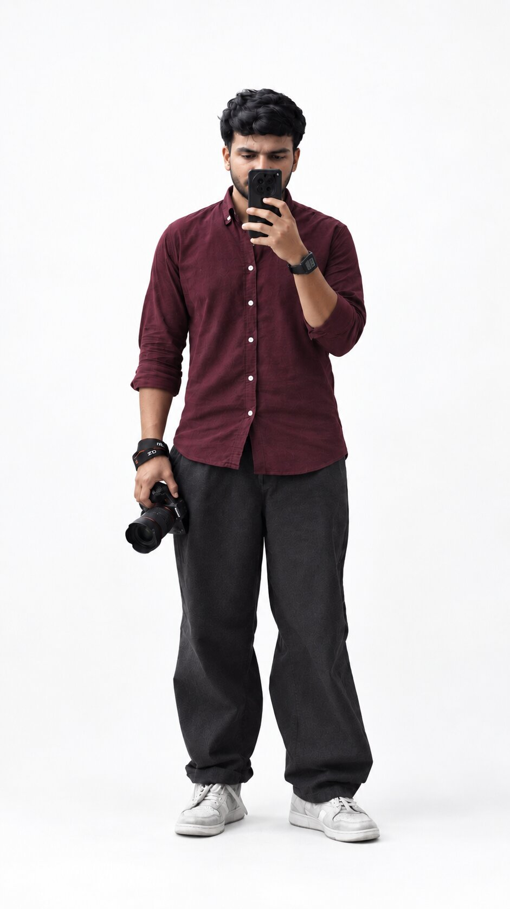

Muhammed Midhilaj
Stories of faith, ritual and belonging. I photograph the quiet rituals and public gatherings that reveal how communities remember, believe and belong.
Documentary photographer, India
Projects

Behind the wrecked lens
I'm Muhammed Midhilaj, a passionate photographer with an eye for capturing raw emotions and untold stories. Through my lens, I aim to freeze moments in time, creating images that speak beyond words.
Photography is my way of storytelling, a silent dialogue with the world around me. Whether it's the vibrant chaos of a crowded street or the subtle calm of evening light, each frame is a piece of the story I'm piecing together.
- Practice
- Photojournalism
- Focus
- Festivals, processions and street life
- Approach
- One imperfect frame at a time